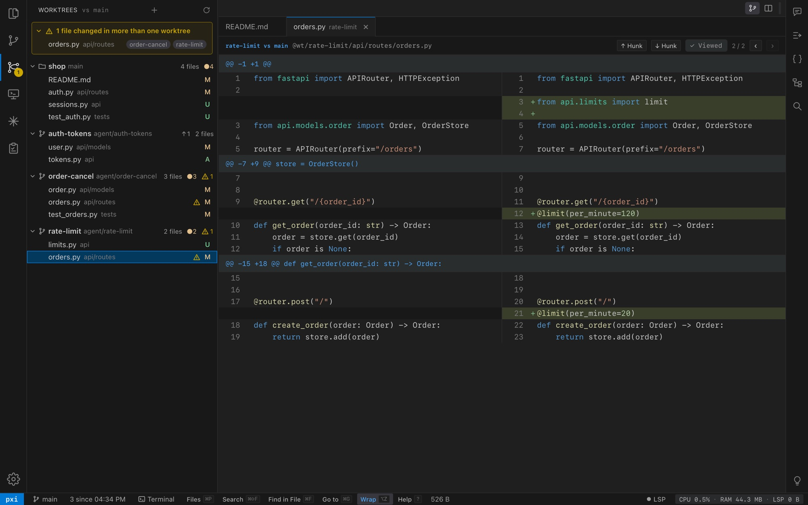
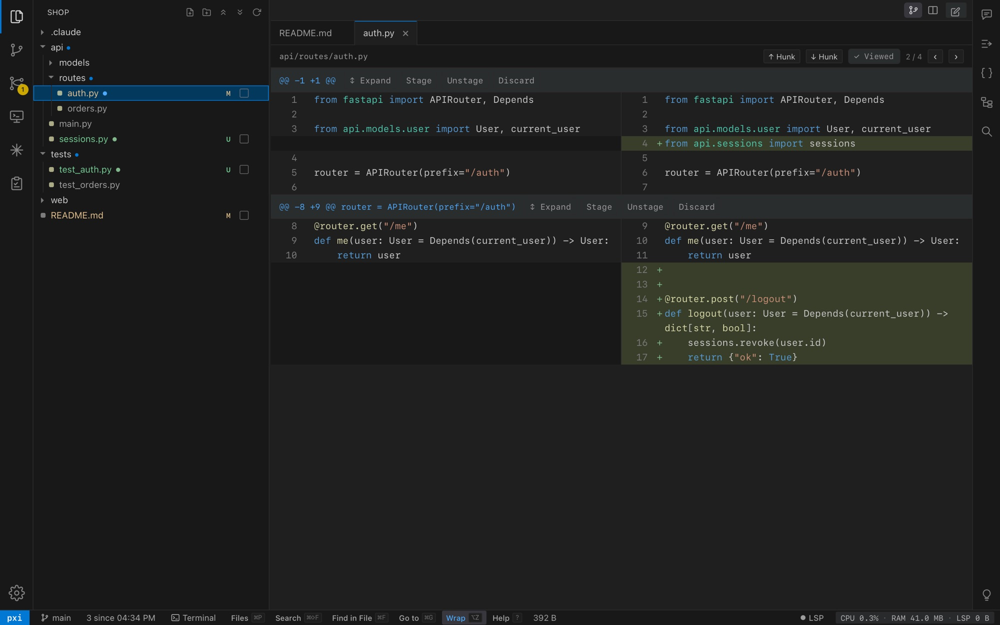
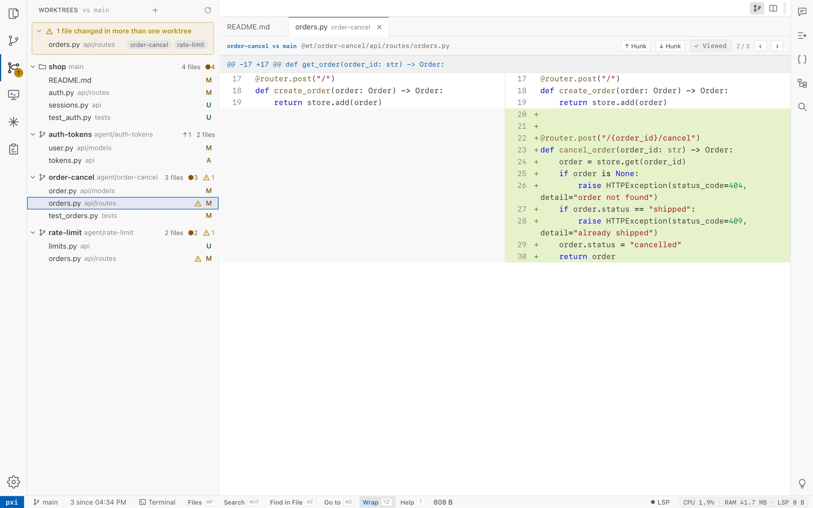

Review what your agents wrote.
Every Claude worktree, its diffs and overlaps, in one native Mac window.
curl -fsSL https://snehal96.github.io/pxi/get.sh | bash
macOS 13 or later. Free and open source, MIT.
What it needs
| System | macOS 13 Ventura or later |
|---|---|
| Chip | Apple silicon or Intel, one universal app |
| Download | 14 MB |
| Agents | Claude Code on your own subscription; no API key |
| Memory | Never more than px0, the engine it is built on |
-
1. See every agent at once.
Each worktree is a card with what it changed. When two agents edit the same file, pxi says so before they merge.

-
2. Mark where you left off.
Review: Set Checkpoint, then let them work. Every file added or changed after it gets a dot, committed or not.

-
3. Send the fix back.
Select the lines, press ⌥K, add a sentence. It goes to the Claude session of the worktree the file came from.
To Claude in order-cancel⌥KReview comment on `api/routes/orders.py` lines 27-28: ```py if order.status == "shipped": raise HTTPException(status_code=409, detail="already shipped") ``` Refunded orders can't be cancelled either.
Measured on every commit
CI fails any change that makes pxi heavier than px0.
| Check | Allowed over px0 |
|---|---|
| Server memory | 10% or 1 MB |
| Page JavaScript heap | 10% |
| Page elements, idle | 120 |
| Page elements, views opened | 200 |
| Bundle, gzipped | 25% |
Get pxi
Paste it into Terminal; run it again to update.
curl -fsSL https://snehal96.github.io/pxi/get.sh | bash
Or download the zip; the first time, right-click pxi.app and choose Open.
